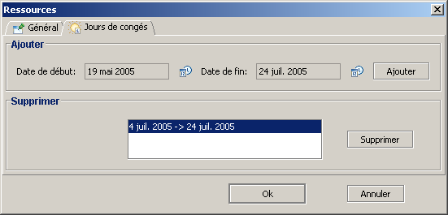
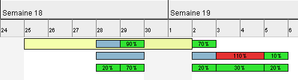

Divers
Cette section regroupe diverses fonctionnalit�s relatives � la gestion des ressources.
Cong�s
GanttProject vous permet de d�finir les cong�s pour chacune des ressources.
- ouvrez la fen�tre de propri�t�s d'une ressource ;
- activez l'onglet Jours de cong�s ;
Vous avez la fen�tre suivante :

Pour d�finir les p�riodes de cong�s :
- cliquez sur le bouton
 en face de la Date de d�but ;
en face de la Date de d�but ;
- choisissez la date de d�but de la p�riode de cong�s ;
- cliquez sur le bouton en face de la Date de fin ;
- choisissez la date de fin de la p�riode de cong�s ;
- cliquer sur le bouton Ajouter ;
- la p�riode de cong�s a �t� ajout�e, elle est visible dans la zone permettant la suppression des cong�s ;
- cliquez sur le bouton Ok.
Pour supprimer les p�riodes de cong�s :
- ouvrez la fen�tre de propri�t�s d'une ressource ;
- activez l'onglet Jours de cong�s ;
- dans la zone nomm�e Supprimer, cliquez sur les p�riodes de cong�s que vous souhaitez supprimer
(maintenez la touche Ctrl enfonc�e lorsque vous cliquez pour une multi-s�lection) ;
- cliquez sur le bouton Supprimer ;
- cliquez sur le bouton Ok.
Les jours de cong�s sont repr�sent�s par des rectangles jaunes (par d�faut) sur le graphique.

N.B. : Sur cet exemple des t�ches sont affect�es alors que la ressource est en cong�s ! C'est un conflit
que l'utilisateur doit r�soudre.
Importation de ressources
GanttProject vous permet d'importer des ressources provenant d'un autre projet.
- menu Ressources, Importer des ressources ;
- s�lectionnez le projet (fait avec GanttProject) duquel vous voulez importer les ressources ;
- validez ;
- les ressources sont ajout�s aux ressources d�j� pr�sentes dans le projet.
N.B. : Il n'y a aucune gestion des doublons, veillez � nettoyer vous m�me les doublons
apr�s l'importation des ressources.
Envoi de courriel
Avec GanttProject, vous pouvez envoyer des courriels aux ressources d�finies dans
vos projets.
- s�lectionnez la ressource � laquelle vous voulez envoyer un courriel ;
- allez dans le menu Ressources, Envoyer un courriel ou cliquez
avec le bouton droit de la souris sur la ressource, puis cliquez sur Envoyer un courriel ;
- le client de courrier par d�faut de votre syst�me d'expoitation s'ouvre alors pour que
vous puissiez �crire un courriel � la ressource.